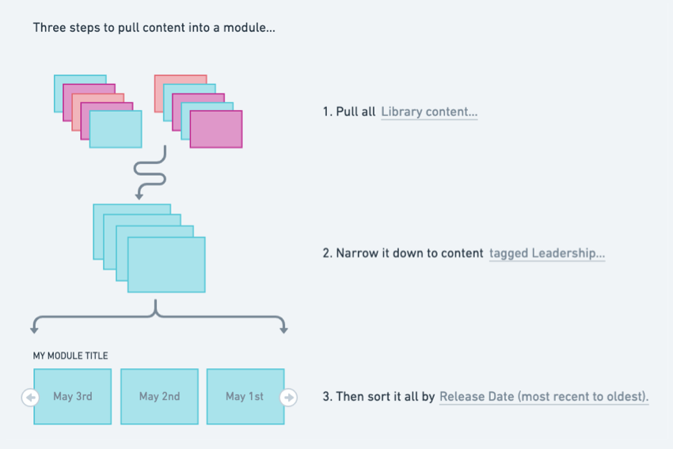

Pull content into a module This document was originally published on help.junolive.com. To build your own rotator, grid, or list module, you must decide which content it will showcase. Content can be pulled and sorted in creative ways. If you have a highly custom idea, this page will help you learn about your options and build it from scratch. Or check out our prebuilt modules to get inspired by common examples. You might even start with a prebuilt module, then check out the options on this page to request some changes. ✅ Build your own module in two steps Choose a module layout Pull content into a module 👈 You are here! How it works Content is automatically pulled into modules from your site’s content management system. To tell the system which content you want to display, we have to define it in three steps.  First, you must choose which content type to pull into the module. Then, you’ll usually want to narrow down the content to a smaller selection. Finally, you can choose to sort the content so it appears in a specific order. The form below can help you communicate your ideas. But if you get stuck, just tell your JUNO Success Manager about your goal and they’ll help with recommendations. The goal of this module is: Pull these content type(s): This step is required. The rest are optional. Then narrow it down… Show content with this session status: Show content with these tag(s): Hide content with these tags(s): Make personalized recommendations based on access level: Specify Strict or Flexible Make personalized recommendations based on these profile tag types: Specify tag types and specify Strict or Flexible Then sort it all by: 1. Pull content types (required) First, decide which type of content you’d like to appear in the module. Usually, you only need one type. But you can choose multiple. A common example of multiple content types in a module is Session + On-demand content. This module would offer attendees a mix of live and on-demand content. Choose one or more content types… Sessions (You must also specify Main stage, Panel, and/or Breakout.) In-person sessions On-demand Exhibitors Speakers Courses Resources (This is often used for billboard advertisement graphics.) Social feed posts Forum posts Courses work differently than the other content types. Please see Course functionality constraints. You can stop here if you like! The next steps are optional. Note that if you don’t sort (step 3), the module by default shows content with the latest release date first to highlight recently released content. 2. Narrow down the content selection (optional) After choosing a content type, you’ll often want to narrow it down so the module is focused on a specific topic, availability, or personalized recommendation. For example, instead of showing any session, a module might only show sessions about “leadership”. You can narrow content down by specifying a Session status, Tags, Actions, or Personalized recommendations. Use a single method alone or try combining them in creative ways. Session status If you pull Sessions or In-person sessions into the module, you can narrow it down to sessions with a specific status. A session’s status changes over time as it goes from Upcoming, to Live, to Past. Choose a session status… Live now Upcoming Upcoming and Live now Note that the module is hidden whenever there are no sessions with the specified status. For example, a Live now module would disappear during an event’s break time in between live sessions. Tags You can narrow down any content type to show only content that has specific tags. Or you can do the opposite: Hide content that has specific tags. Note that every attendee sees the same content when you specify tags. If you want to show attendees personalized recommendations, use the Personalized recommendations option below. To specify tags… Choose tags to show content (usually profile, topic, layout, and/or access level tags) Choose tags to hide content (usually profile, topic, layout, and/or access level tags) If you choose multiple tags, you can also decide to require all. This means that content only appears in the module if it has every specified tag. Otherwise, content appears as long as it has at least one of the tags. Profile tags are any tags attendees select when they create their profile. For example, an onboarding question might ask about their interests, with multiple options like Leadership and Design. Any of these tags can be applied to related content and pulled into the module. If the module you create isn’t related to any profile tags, you should create a new layout tag. Usually, a layout tag simply matches the module title or page title. For example, if a module is titled Featured Sessions, create a Featured Sessions tag and add it to each piece of content that you’d like to appear in that module. Access level tags lock content so that only attendees who have permission or who bought a specific ticket can open it. When you specify access level tags for a module, it only shows content with that access level. Attendees who don’t have access still see it, but it has a lock icon. If they click it, they can be prompted to purchase a ticket on an external site. Learn more about access levels on content. Actions You can narrow down any content type to show only content that a user has performed a specified action on. Or you can do the opposite: Show content that a user has not performed the specified action on. Note that every user sees different content depending on whether or not they performed the action. To specify actions… Choose one or more actions that must be completed, and the module shows users content that they performed the action(s) on. Choose one or more actions that must NOT be completed, and the module shows users content that they did not perform the action(s) on. Here are some common ways to use actions: Show courses that you have Started but not yet Completed. Show speakers and exhibitors that you have Favorited. Show sessions that you have added to your schedule by clicking the Attend button. (This is usually displayed as a My Schedule tab on the schedule page.) Personalized recommendations You can narrow down any content type to show personalized recommendations for attendees. Each attendee sees different content in the module, depending on their access level tags or the tags they selected in their profile. Access level Choose one way to make recommendations based on access level tags… Strict access level recommendation only shows attendees content that’s specific to their access level. For example, one attendee might see all Level 1 Sessions, while another attendee sees all Level 2 Sessions. Flexible access level recommendation shows content specific to their access level, but also content that doesn’t have an access level at all. This option is best when you want to make recommendations but also want to encourage attendees to discover new things. Note that if someone isn’t assigned an access level, they see content for all access levels instead. Profile (usually interests) Make recommendations based on profile tags… Choose one or more profile tag types, and the module shows attendees content they’re interested in. You also must decide if it’s a strict or flexible recommendation. For example, an onboarding question might ask attendees about their interests, with multiple options like Leadership and Design. Interests is the tag type, while Leadership and Design are the tags. If you narrow the module content to recommendations based on the Interests tag type, one attendee sees content about Leadership and another sees content about Design. Note that if someone didn’t select any tags, they see all Interests content instead. A flexible recommendation shows additional content beyond the tag type(s) you specified. For example, if some content isn’t related to the Interest tag type at all, it could still show up in the module. This option is best when you want to make recommendations but also want to encourage attendees to discover new things. A strict recommendation only shows content from that tag type. It narrows down your content much further. This option is best when you want the module to focus on a specific topic. 3. Sort the content (optional) Choose one way to sort the content in the module. Note that if you don’t sort, the module by default shows content with the latest release date first to highlight recently released content. Choose one way to sort… Sort by Definition Release date (earliest to latest, or latest to earliest) Release is when the content becomes viewable. For example, a piece of on-demand content might not be released until a specific date. A session might be released well before its start time. Start date (earliest to latest, or latest to earliest) Start is when the content (such as a session) begins. Only some content types have a start date. Alphabetical by title Use this if the first character in the title is a letter. Note that speakers can be sorted by the first character in their first name or last name. Numerical by title (ascending or descending) Use this if the first character in the title is a number. For example, 1 Session and 2 Session. Note this doesn’t work if the first character is a letter. For example, Session 1 and Session 2 do not sort numerically. Popularity over time Amount of views over time. If content is viewed 100 times in the last five minutes it is more popular than content viewed 100 times over a month. Random Changes each time you reload the page.